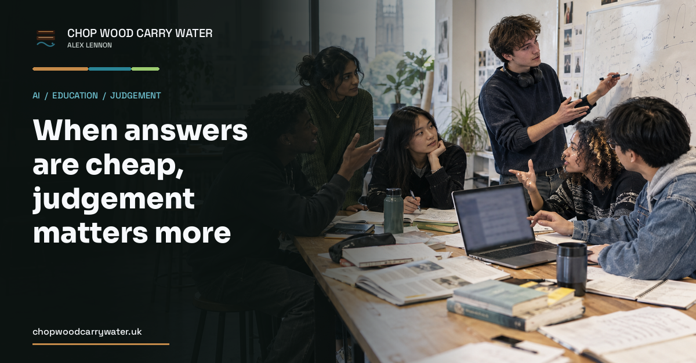

AI and education · 15th September 2026
When answers are cheap, judgement matters more
AI can produce answers in seconds. Education should bring critical thinking back to the centre, with the Trivium offering a useful historical lens.

When I started work, knowing things looked quite different. The Internet was not yet part of ordinary working life. If I needed to understand a subject, I read books. Often that meant reading a shelf of them, because that was the only way I could find the information I needed. You wouldn't believe how much slower life was back in the 90's.
Then search engines came along. I imagine most of you won't remember AltaVista, Ask Jeeves and all the other Google challengers. Those were heady times. Information became much easier to find, but finding it was only half the job. The useful skill was learning how to search well, compare different answers and decide which sources deserved attention.
This matters particularly in engineering. I am rarely looking for a solution in the abstract. I need something that will fit a real product, remain useful in the future and still be constrained enough to deliver within the time and budget available. Several answers may be technically sound. Only one may be right for the work.
The skills we need are not simply about accessing information. They are about judging it.
Over the past year, I have seen a massive change. I increasingly do not search the Internet myself. I explain what I am trying to achieve to a large language model, and it finds, compares and applies information on my behalf.
This change is wildly different from mere search. The agentic harness I've created uses tools across real computer systems over the Internet. It can create containers and virtual machines, configure services and DNS, and carry out the grunt work that previously consumed a substantial part of my day. I set the goals and I make the consequential decisions, but much of the mechanical effort has moved away from me.
That is wonderful! It frees me to spend more time on the ideas, the trade-offs and the purpose of the work. I cannot emphasise strongly enough to you how game changing this is for us.
This raises a difficult question for education. If AI can retrieve the information and perform the basic tasks, what should young people learn? It is tempting to say they no longer need to learn the things a machine can do. I think that is premature and potentially dangerous.
AI can move quickly and confidently in the wrong direction. It can misunderstand the objective, optimise the wrong thing or disappear into an impressive-looking dead end. A human still has to notice, redirect it and take responsibility for the result.
You cannot supervise what you cannot evaluate.
That is why we should bring the explicit teaching of critical thinking back to the centre of education. I do not mean occasionally telling students to be sceptical. I mean repeated practice in breaking an argument apart, identifying its assumptions, testing its evidence and explaining why a plausible answer may still be wrong.
The Trivium offers a useful historical lens. Ancient education was not one uniform system, and advanced learning was far from universal. But after literacy and grammar, some students moved into rhetoric, argument, literature, mathematics or law. Quintilian's account of Roman education, for example, progresses from grammar to exercises in narrative, proof and refutation.
By late antiquity, grammar, dialectic and rhetoric had been brought together. They later formed the medieval Trivium. In modern terms: understand language, test an argument and communicate a conclusion.
I am not arguing for the return of a Roman or medieval classroom. What I am suggesting, though, is that before people specialise, they need the tools to understand a claim, challenge it and explain what they think. AI's ability to produce fluent, persuasive answers makes that insight more relevant, not less.
This should change teaching and assessment. Give students an AI-generated answer and ask what it assumes. Which claims need evidence? Which sources would verify them? What would change their mind? Let students compare answers, defend a rejection and improve a weak argument. The finished response matters, but the reasoning matters more.
Foundational knowledge still matters because critical thinking cannot happen in a vacuum. Schools and universities should use AI, but operating a tool is not the same as understanding its output. Refusing to teach AI would make no more sense than refusing to teach search. Teaching it without teaching students how to challenge it would be worse.
Answers are becoming cheap. We should bring back the deliberate teaching of the skills needed to judge them.
What would it take to put critical thinking back at the centre of education?
(Cursor helped draft this)